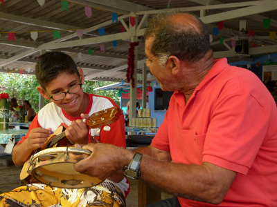

O projeto contou cinco objetivos básicos ao longo do período de financiamento do programa pelo IPHAN:
1) Transmissão e Formação: continuidade das aulas para o aprendizado do toque e construção de instrumentos (rabeca, viola, adufo, entre outros) e de dança (valsados e batidos);
2) Documentação e Registro: produção fonográfica de SMD (tecnologia 100% nacional), com tiragem total de 2000 (duas) mil cópias, contendo 02 (duas) canções de cada um dos 10 (dez) grupos de fandango locais; produção de 01 (um) um documentário audiovisual em SMDV (tecnologia 100% nacional), com tiragem de 1000 (mil) cópias que registre as especificidades e diversidades do fandango caiçara cananeense; publicação de 01 (um) livro de história em quadrinhos, com tiragem de 1000 (mil) cópias sobre a história do fandango e a cultura caiçara no município de Cananéia; e criação de (01) um portal web para socialização da tecnologia social empregada, disponibilização de todo o conteúdo produzido e divulgação das atividades relacionadas ao fandango caiçara local. Vale ressaltar, que todos esses produtos sociais serão produzidos pelos jovens bolsistas das ações “Agente Cultura Viva” e “Escola Viva” com uso
exclusivo de softwares livres (Ardour, Audacity, Gimp, Inkscape, Cinelerra, Blender, Scribus entre outros) e que 50% (cinquenta por cento) do total de cada um desses produtos serão doados aos 10 (dez) grupos de fandango caiçara do município;
3) Geração de Renda: disponibilizar 10 (dez) bolsas-auxílio mensais, no valor de R$ 200,00 (duzentos reais) cada, para cada um dos grupos do fandango caiçara do município;
4) Organização e Apoio: fortalecer as ações relacionadas ao fandango caiçara existentes no município, em especial as domingueiras de fandango (bailes gratuitos e abertos ao público) e os puxirões (mutirões) que voltaram a ser realizados em algumas comunidades tradicionais. Com isso, esperamos ainda, criar plataformas de oportunidade para a divulgação dos resultados e/ou produtos gerados a partir do programa, bem como, gerar possibilidades e/ou fortalecer iniciativas de economia solidária existentes no município, como por exemplo, a Feira da Agricultura Familiar;
5) Circulação e acesso – fortalecer e ampliar as ações do “Cruzeiro EducArte” realizado pelo Ponto de Cultura “Caiçaras” por meio da disseminação das ações e atividades do projeto em comunidades caiçaras residentes no Parque Estadual da Ilha do Cardoso, fato esse qe de certa forma as isola geograficamente do centro urbano, bem como, apoiar os mutirões que voltaram a acontecer em algumas dessas comunidades, em especial na Comunidade Caiçara do Ariri, através da disponibilização de recursos financeiros e/ou apoio técnico.
Além disso, promoveremos encontros presenciais para estimular o debate democrático e participativo entre pesquisadores, fandangueiros, aprendizes e órgãos gestores do patrimônio cultural.
Para tanto, procuramos oferecer meios efetivos para que os participantes possam compreender os fatos naturais e humanos referentes às temáticas cultural e ambiental, de forma a estimular que desenvolvam com plenitude e liberdade as suas potencialidades (individuais e/ou coletivas) e a adotar posturas e comportamentos sociais que lhes permitam viver numa relação construtiva consigo mesmos e com seu meio, fortalecendo assim, sua identidade e dinâmica cultural.


{kind=link}